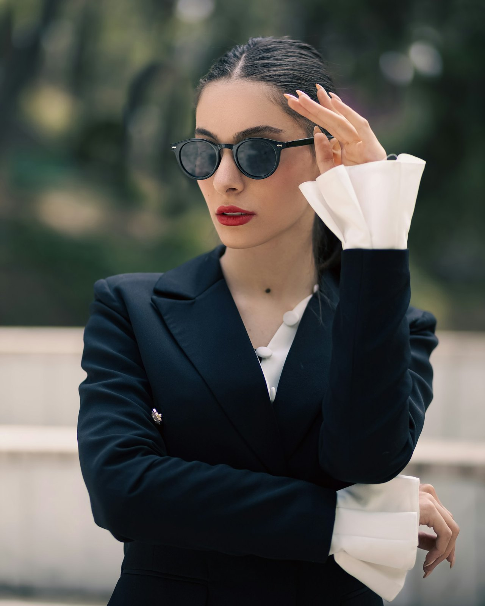

@ottobrestudio
Quanto devo spendere ogni mese in pubblicità sui social?
Parti dal 10-20% di quello che incassi in un mese. Se hai appena aperto, prova con 5-10 euro al giorno per due settimane. La pubblicità amplifica quello che funziona, non salva un’offerta debole.